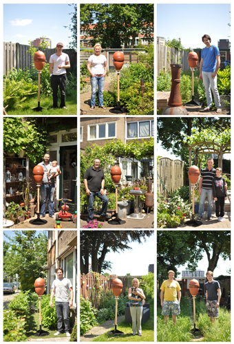

The Backyard Beehive, my graduation project
The theme was pleasure of the city. I chose to work with the fact that bees are doing better in the city than in the countryside.
For my graduation project I designed a hive that might make it easyer for people to keep a colony of bees in the city, in their backyard or on the balcony.
You hear a lot about the bees and their struggles lately so the issue is reasonably well known: the bees are in trouble. And we need bees now more then
ever. There are many reasons for these problems, pesticides, monoculture, an infestation of the Varroa mite. But also the number of beekeepers has
declined dramatically. This is a problem because without beekeepers, the bees here have little chance to survive, at least in Holland.
I myself have been curious about these interesting creatures for some time now but my interest was really aroused when I learned that bees in the city are
actually doing much better than bees in the rural areas. Here, of course, no pesticides, and every balcony or garden, however small, has some flowers. You
can find more flowering trees in the city and it is generally a few degrees warmer than in rural areas (this is important because need to keep the broodnest
warm all the time). This is why you can find
beekeepers keeping bees even in the heart of biggest cities all over the world, Amsterdam, London, New York, etc.. even Hong Kong.
Furthermore, I learned from my conversations with beekeepers that we are on a kind of tipping point. Put very bluntly, I got the following picture: there is
an old generation, the retirees and pensionados that rely on the old beekeeper knowledge handed down from the farmers. This is a form of beekeeping focussed
on honey harvest. But there is also a new, younger generation (although of course this is not a question of age but of perspective). This generation is more
interested in contact
with nature and helping the bee. In their eyes the honey harvest is secundary to the bees’ wellbeing. Natural forms of beekeeping appeal to them more than
the traditional forms.
But if you want to learn beekeeping, you will be taucght the harves focussed skills and knowledge. In my opinion there is a great untapped optential, a big
group of enthousiastic people willing to help the bee that dont want to spend a lot of time having to learn skills focused on harvesting honey when all they
want is to help the bee!
I decided to do my bit to help by looking at how I can encourage these people to keep a hive. And when more people get into contact with the beekeeping, some
of them might really have fun and progress into proper beekeeping. This might help rebalance the beekeeper population. The interest is obviously there,
people are very willing to have a colony but takeing the step to proper beekeeping is just too big. And beekeeping is still a little off the beaten track.
How dó you become beekeeper? Where do you buy those big wooden boxes at all? What if you could just buy a hive at your local convenience store or garden center?
So I designed a hive that people in the city can use in their backyard or on their balcony. A hive that allows you to harvest honey but especially one
that does not require too much beekeeping knowledge. It is based on more natural beekeeping methods, which are intrinsically more 'laissez faire', trying to
minimize their impact on the colony. Furthermore, I based the shape of the hive on the oval because that is the shape the bees give to their their combs
naturally, though they will addapt to the space they are in.
The only problem is that I wanted to become a beekeeper to really understand the problem. Now I am quite happy with the resulting hive as a designer but as a
beekeeper I know that developing such a hive will need a few years of serious testing and improving before I dare to give it to people to use in their backyard. I do
think it is an interesting prototype and represents a serious comment on an issue that is very relevant at this time.